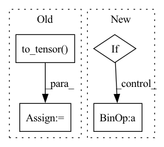

Pattern ID :22204

Before Change
truncation_strategy="longest_first",
)
tensors = {k: paddle.to_tensor(v) for (k, v) in features.items()}
with paddle.no_grad():
if self.use_en:
After Change
for cur_queries, cur_docs in batches:
datasets = []
for query, doc in zip(cur_queries, cur_docs):
if self.embed_title:
datasets.append([query, doc.meta["name"] + doc.content])
else:
datasets.append([query, doc.content])
outputs = self.transformer_model(datasets)
In pattern: SUPERPATTERN
Frequency: 3
Non-data size: 4
Instances
Fragment ID: 70211655
Project Name: paddlepaddle/paddlenlp
Commit Name: 35be940d8e29d002d830da63c5923f63b0ec4d5d
Time: 2023-03-06
Author: w5688414@gmail.com
File Name: pipelines/pipelines/nodes/ranker/ernie_ranker.py
M Class Name: ErnieRanker
N Class Name: ErnieRanker
M Method Name: predict_batch(5)
N Method Name: predict_batch(5)
M Parent Class: BaseRanker
N Parent Class: BaseRanker
M File Name: pipelines/pipelines/nodes/ranker/ernie_ranker.py
N File Name: pipelines/pipelines/nodes/ranker/ernie_ranker.py
M Start Line: 159
M End Line: 177
N Start Line: 150
N End Line: 159
'>
Before Change
curr_batch_size = data[0].shape[0]
real_image = data[0]
x = np.random.normal(0, 1, (curr_batch_size, config.MODEL.LATENT_DIM))
z_paddle = paddle.to_tensor(x, dtype="float32")
gen_imgs_paddle = model(z_paddle, 0)
gen_imgs_paddle = (gen_imgs_paddle * 127.5 + 128).clip(0, 255).astype("uint8")
gen_imgs_paddle = gen_imgs_paddle / 255.0
fid.update(gen_imgs_paddle, real_image)
After Change
max_real_batch = max_real_num // batch_size
else:
max_real_batch = total_batch
if max_gen_num is not None:
max_gen_batch = max_gen_num // batch_size
else:
max_gen_batch = total_batch
'>
Fragment ID: 70211654
Project Name: br-idl/paddlevit
Commit Name: 30234ce05046d4e4e74dc12cfdc5f4ad609e4de1
Time: 2021-08-18
Author: xperzy@gmail.com
File Name: gan/transGAN/main_single_gpu.py
M Class Name: AnonimousClass
N Class Name: AnonimousClass
M Method Name: validate(8)
N Method Name: validate(5)
M Parent Class:
N Parent Class:
M File Name: gan/transGAN/main_single_gpu.py
N File Name: gan/transGAN/main_single_gpu.py
M Start Line: 104
M End Line: 116
N Start Line: 93
N End Line: 152
'>
Before Change
truncation_strategy="longest_first",
)
tensors = {k: paddle.to_tensor(v) for (k, v) in features.items()}
with paddle.no_grad():
if self.use_en:
After Change
top_k = self.top_k
datasets = []
for doc in documents:
if self.embed_title:
datasets.append([query, doc.meta["name"] + doc.content])
else:
datasets.append([query, doc.content])
outputs = self.transformer_model(datasets)
'>
Fragment ID: 70211653
Project Name: paddlepaddle/paddlenlp
Commit Name: 35be940d8e29d002d830da63c5923f63b0ec4d5d
Time: 2023-03-06
Author: w5688414@gmail.com
File Name: pipelines/pipelines/nodes/ranker/ernie_ranker.py
M Class Name: ErnieRanker
N Class Name: ErnieRanker
M Method Name: predict(4)
N Method Name: predict(4)
M Parent Class: BaseRanker
N Parent Class: BaseRanker
M File Name: pipelines/pipelines/nodes/ranker/ernie_ranker.py
N File Name: pipelines/pipelines/nodes/ranker/ernie_ranker.py
M Start Line: 98
M End Line: 115
N Start Line: 97
N End Line: 104